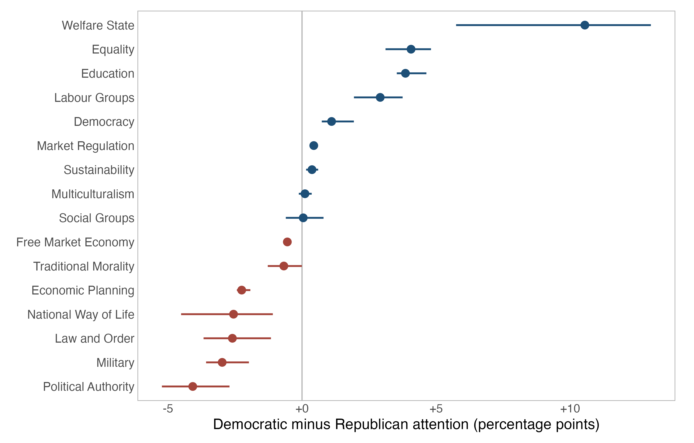
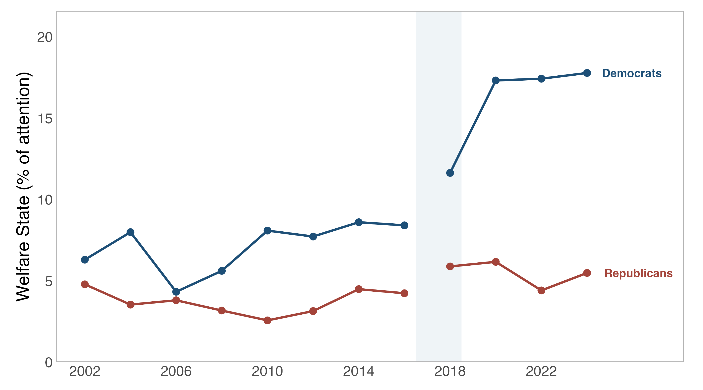

I assembled 799,058 archived pages for 7,353 U.S. House and Senate candidate-years. The dataset extends ICPSR 226001, adding House candidates from 2018 through 2024 and Senate candidates from 2002 through 2024. The two datasets are designed to be appended by rows.
Campaign websites record candidates' positions in their own words. Many disappear after an election; this release preserves the pages captured by the Internet Archive.
How the data were built
I identify campaign websites from FEC records and Wikidata. I then retrieve election-year captures from the Wayback Machine and follow homepage links one level deep. I compute the coded variables with Di Tella et al.'s replication code and text filter.
What the data contain
- Page-level text, with its archived source URL.
- A candidate-year panel, using the longest snapshot.
- ICPSR-compatible measures of length, lexical diversity, word rarity, and attention to 31 Manifesto Project topics. Topics measure attention, not position.
- FEC IDs for every candidate-year and DIME IDs for 79 percent.
- An attempt roster, including failed captures.
Coverage and limitations
Of 9,848 attempted candidate-years, 7,353, or 75 percent, yielded archived text. Capture requires both a findable campaign website and an election-year archive. The roster provides the denominator for coverage analyses.
Against major-party general-election returns, House coverage is 69 to 76 percent from 2018 onward. Senate coverage rises from 17 percent in 2002 to about 70 percent after 2008. Vote-weighted coverage is about four percentage points higher. Missing websites mainly belong to candidates who received few votes.
![Two panels, House and Senate, showing captured candidates as a percentage of general election ballot candidates from 2002 to 2024. In the House panel a grey line for Di Tella et al. runs from 44 percent in 2002 to 60 percent in 2016, and a dark blue line for this dataset runs from 75 percent in 2018 to 69 percent in 2024. In the Senate panel a dark blue line rises from 17 percent in 2002 to about 70 percent from 2008 onward. A dashed line in each colour shows the same share weighted by votes cast.](coverage_by_office_year.png)
Of the captured candidate-years, 3,032 match a general election ballot;
4,321 are other same-year FEC candidates. Capture rates are 84 and 69
percent, respectively. Use on_ballot,
general_votes, and the roster to define the relevant sample.
Four limitations matter. First, about 11 percent of candidate-years
contain little or no text; these observations remain in the data with a
text_quality flag. Second, post-election pages may reflect
changed or expired domains, so each measure also has a
_preelec version. Third, linked pages within a snapshot can
come from nearby dates. Finally, the median candidate-year spans 255
days. I would therefore treat pooled comparisons as more reliable than
within-candidate changes over time.
Validation
Before comparing the two collections, I apply the coding pipeline to Di Tella et al.'s text. It reproduces their published measures:
| Measure | What it measures | Correlation |
|---|---|---|
n_char | Length of the cleaned text, in characters | 1.00 (identical) |
n_words | Length in words | 1.00 (identical) |
| TTR | Vocabulary range: distinct words divided by total words | 1.00 |
| MATTR | The same in a 200-word moving window, so length does not drive it | 1.00 |
| entropy | How rare the candidate's words are in Google Books | 1.00 |
Computed for 400 candidate-years. Character and word counts are identical; the remaining correlations are at least 0.9991.
Median document length changes by seven percent at the boundary: from 1,678 characters in 2016 to 1,789 in 2018. Reproducing the original text filter is essential; without it, length measures are about 50 percent higher.

The topic measures recover familiar partisan differences: Democratic candidates emphasize welfare, labour, equality, and education; Republican candidates emphasize political authority, economic planning, national way of life, and law and order.

The combined House series shows a widening difference in welfare-state attention. Democratic candidates move from 8 percent in 2016 to about 17–18 percent after 2020; Republican candidates remain near 4–6 percent. The break between 2016 and 2018 marks the handoff between datasets, so the figure describes the series rather than attributing the change to a single event.

DIME CF-scores provide an external validation measure because they use campaign-finance data rather than website text. Topic attention follows the expected ordering when parties are pooled, but correlations are near zero within each party. The topics distinguish parties; they are not useful within-party ideology proxies.

Scraping validation is narrower than coding validation. Among the 41 candidates found in both collections, extracted document length correlates at 0.87 and lexical diversity at 0.22. Length is comparable across the combined panel; lexical diversity is comparable only in its overall distribution.
Merging with the ICPSR data
The two datasets cover different years. The ICPSR-compatible panel uses matching fields and can be appended to the 5,267 candidate-years in ICPSR 226001, producing 12,620 candidate-years.
Data and documentation
The README, codebook, and manifest document the five data files. CC BY 4.0 covers the compilation, coded variables, and documentation; copyright in campaign text remains with its authors. Every text row records its archived source URL. Rights-holders may request removal through the Dataverse Contact Owner control.
Citation
Hilbig, Hanno (2026). U.S. House (2018-2024) and Senate (2002-2024) Candidate Websites. Version 1.0. Harvard Dataverse. https://doi.org/10.7910/DVN/BZ2JRS
Please also cite the original dataset this one extends:
Di Tella, Rafael, Randy Kotti, Caroline Le Pennec and Vincent Pons (2025). Keep Your Enemies Closer: Strategic Platform Adjustments during U.S. and French Elections. openICPSR 226001.